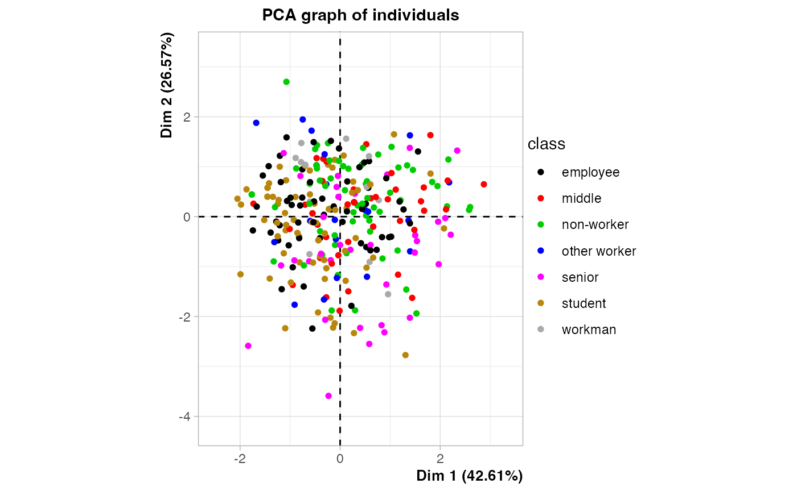
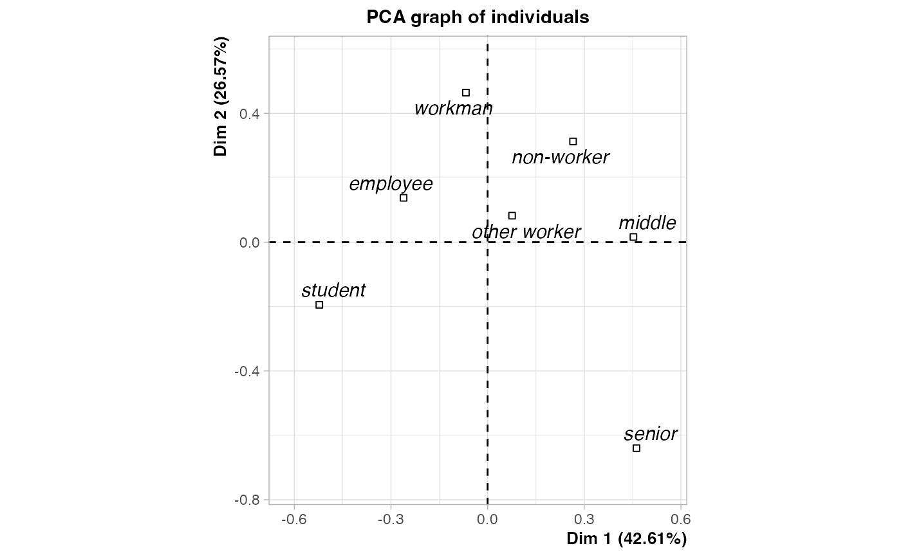
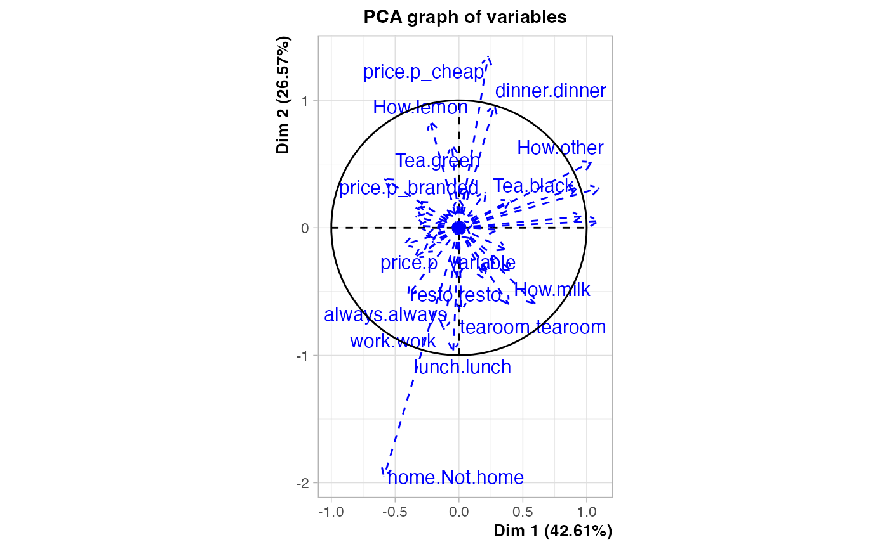
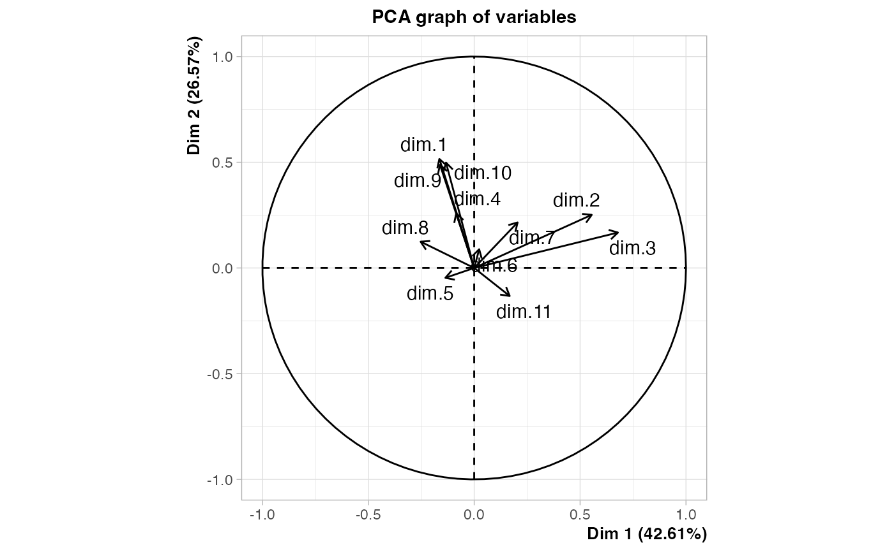

DAQ.RdDescriptive discriminant analysis (aka "Analyse Factorielle Discriminante" for the French school of multivariate data analysis) with qualitative variables.
DAQ(data, class, excl = NULL, row.w = NULL,
type = "FR", select = TRUE)data frame with only categorical variables
factor specifying the class
numeric vector indicating the indexes of the "junk" categories (default is NULL). See getindexcat or use ijunk interactive function to identify these indexes. It may also be a character vector of junk categories, specified in the form "namevariable.namecategory" (for instance "gender.male").
numeric vector of row weights. If NULL (default), a vector of 1 for uniform row weights is used.
character string. If "FR" (default), the inverse of the total covariance matrix is used as metric. If "GB", it is the inverse of the within-class covariance matrix (Mahalanobis metric), which makes the results equivalent to linear discriminant analysis as implemented in lda function in MASS package.
logical. If TRUE (default), only a selection of components of the MCA are used for the discriminant analysis step. The selected components are those corresponding to eigenvalues higher of equal to 1/Q, with Q the number of variables in data. If FALSE, all components are used.
This approach is also known as "disqual" and was developed by G. Saporta (see references). It consists in two steps : 1. Multiple Correspondence Analysis of the data 2. Discriminant analysis of the components from the MCA
The results are the same with type "FR" or "GB", only the eigenvalues vary. With type="FR", these eigenvalues vary between 0 and 1 and can be interpreted as "discriminant power".
If there are NAs in data, these NAs will be automatically considered as junk categories. If one desires more flexibility, data should be recoded to add explicit factor levels for NAs and then excl option may be used to select the junk categories.
An object of class PCA from FactoMineR package, with class as qualitative supplementary variable and the disjunctive table of data as quantitative supplementary variables, and two additional items :
correlation ratios between class and the discriminant factors
an object of class speMCA with the results of the MCA of the first step
Bry X., 1996, Analyses factorielles multiples, Economica.
Lebart L., Morineau A. et Warwick K., 1984, Multivariate Descriptive Statistical Analysis, John Wiley and sons, New-York.)
Saporta G., 1977, "Une méthode et un programme d'analyse discriminante sur variables qualitatives", Premières Journées Internationales, Analyses des données et informatiques, INRIA, Rocquencourt.
Saporta G., 2006, Probabilités, analyses des données et statistique, Editions Technip.
library(FactoMineR)
data(tea)
res <- DAQ(tea[,1:18], tea$SPC)
# plot of observations colored by class
plot(res, choix = "ind", invisible = "quali",
label = "quali", habillage = res$call$quali.sup$numero)

# plot of class categories
plot(res, choix = "ind", invisible = "ind", col.quali = "black")

# plot of the variables in data
plot(res, choix = "var", invisible = "var")
#> Warning: ggrepel: 19 unlabeled data points (too many overlaps). Consider increasing max.overlaps

# plot of the components of the MCA
plot(res, choix = "varcor", invisible = "quanti.sup")
